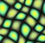
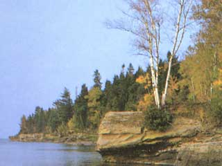
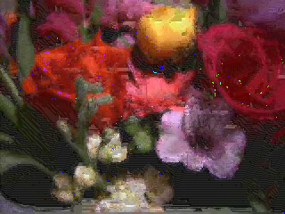
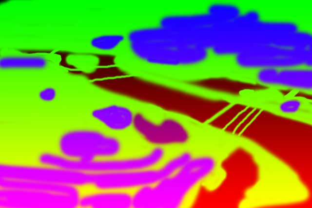
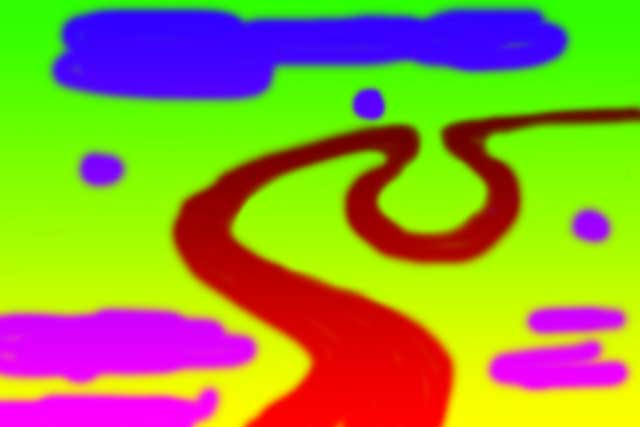
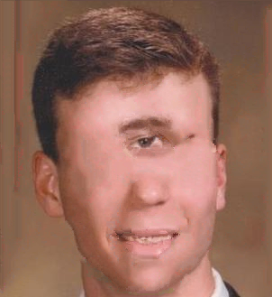
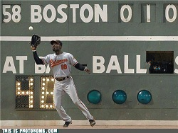
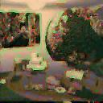

Image Analogies
- Methods
- Applications
- Brief Conclusions
- Crazy Bloopers
Introduction / Basic Algorithm
The purpose of "Image Analogies" is to try to assess the relationship between two images, A and A', and then to synthesize a new image B' from an image B such that the relationship between B and B' is the same as the relationship between A and A'. In general, this isn't an easy problem; even for linear filters, direct "deconvolution" to determine the impulse response of a filter is usually impossible because of the zeros in the frequency domain response of the filter. And this algorithm claims to solve an even more general problem than just linear relationships between A and A'. With a few assumptions and some massaging of the problem, however, some basic results are possible (and surprisingly convincing) in a few domains. The algorithm is presented in the following paper:
Image AnalogiesIn this assignment, I will implement the image analogies framework by following hints given in that paper. I will break down different heuristics and results that are suggested in the paper and show examples that my program generates.
A. Hertzmann, C. Jacobs, N. Oliver, B. Curless, D. Salesin.
SIGGRAPH 2001 Conference Proceedings.
Program Usage:
analogy A A' B B'[-mask_color r g b] [-useAColors] [-bruteForce] [-luminanceRemappling] [-noGaussianLuminance] [-steerableFilters] [-kappa float coherence] [-ANNEps float] [-levels int] [-outputPyramid string directory+prefix] [-verbose]| Parameter | Purpose |
| A, A', B, B' | A and A' are the input images with some relationship between each other. They must be the same size. The program also takes as input B, and it synthesizes an image B' that has the same size as B such that A->A' ~ B->B' |
| -mask_color r g b | For the hole filling/image inpainting feature, specifies a color (r, g, b) of the mask that's used to specify holes (i.e. pixels with this color are overwritten using texture synthesis). r, g, b are in the range [0, 1.0]. In all of my examples I use the mask (0, 0, 1) (pure blue) |
| bruteForce | Use an exhaustive search over all feature vectors instead of ANN. By default, brute force is not used |
| luminanceRemapping | Whether or not to perform luminance remapping as described in section 3.4 of the paper (NOTE: I never actually use this in my examples...it's false by default) |
| noGaussianLuminance | Specifies whether or not to scale down neighborhoods around a pixel by a gaussian (so that neighboring pixels that are closer get emphasized more in the feature vector). This is false by default since the paper recommends it (i.e. I do perform the scaling down by default), though I didn't find it made a huge difference in practice. |
| steerableFilters | Whether or not to include steerable filters at the end of each feature vector in addition to luminance neighborhoods |
| kappa | Specifies the coherence parameter (described in section 3.2 of the paper). This is zero by default |
| ANNEps | The allowed error of the Approximate Nearest Neighbors library (default 1.0) |
| levels | The number of levels in multiresolution synthesis |
| outputPyramid directory/previx | If this parameter is specified, the entire gaussian pyramid of B' will be outputted to the directory specified |
| verbose | Outputs each scanline as it is finished (useful to make sure program isn't hanging at some scanline) |
NOTE: Using the program for hole filling follows a slightly different input pattern. In this case, there isn't really an analogy; just one image to be fixed. So it has the following syntax:
analogy maskedimage fixedimage -holeFillingSome implementation details:
- I am using the ANN Library to calculate approximate nearest neighbors. This library uses a KD tree to accelerate the process of finding a nearest neighbor in the high dimensional space of the feature vectors, though its answer isn't neccessarily perfect (will be explored in this writeup)
- To make using ANN easy, I store the "codebook" of features as a double** array. That is, all of the features from the A->A' pair are stored in the first dimension, while the components of each one of these features is stored in the second dimension. The reason I chose to do this is because later on when constructing an ANN KD-Tree, this 2D array simply has to be casted and it's done (hardly any code is added to use ANN).
I have functions to append features together from different images, since correspondences are created between the concatenated features in A and A' and the concatenated features in B and B'. For multiresolution synthesis, the order of the different features is as follows:
[A from previous level (at a coarse resolution 3x3)] . [A' from previous level (at a coarse resolution of 3x3)] . [A from this level (at a fine resolution of 5x5] . [A' from this level (L-Shaped, at a fine resolution of 5x5)]
The same order is followed for the B and B' images, and a feature from B and B' is compared to a library of all such features from A and A'.
NOTE: When I say L-shaped, I mean that the feature only includes pixels that have been synthesized before in scan-line order. - There is a problem at the first few scan lines because not all of the pixels in the "L shape" have been synthesized yet. So I copy the first few scanlines over without doing any nearest neighbor searching (I just find the closest pixel spatially). This screws up the bottom a little bit if you zoom way in, but it's not very noticeable and I didn't find that it affected the results very adversely. So I left this approach because it was simple
- There's a similar problem with incomplete neighborhoods for the hole filling (image inpainting) case; the neighborhood of completed pixels around a mask pixel is not guaranteed to be (and rarely is) L-Shaped. I completely abandoned ANN in this case and used brute force for everything, comparing only the pixels between each feature that are completed in both. I'll explain this more later with examples, and I'll explain a proposal I have to extend this to use ANN (which I unfortunately did not have time to implement)
Coherence
The algorithm goes through and finds the most similar neighborhood to the neighborhood of the pixel to be synthesized, disregarding the location of that pixel. A natural extension that has been proposed by several before this (starting with this paper) is to favor pixels that are close together instead of scattering pixels from all over. This is known as "coherence." I've implemented my own version of coherence following the recommendations in the Image Analogies paper, which is called Kappa and is a positive real number. Here are some results varying the coherence parameter
| Kappa | ||||
Kappa = 0.5 ./analogy ../input/texture1.A.jpg ../input/texture1.Ap.bmp ../input/coherence.jpg ../output/coherence_0.5.bmp -kappa 0.5 -useAColors -bruteForce |  | |||
Kappa = 2 ./analogy ../input/texture1.A.jpg ../input/texture1.Ap.bmp ../input/coherence.jpg ../output/coherence_2.bmp -kappa 0.5 -useAColors -bruteForce | ||||
Kappa = 4 ./analogy ../input/texture1.A.jpg ../input/texture1.Ap.bmp ../input/coherence.jpg ../output/coherence_4.bmp -kappa 4 -useAColors -bruteForce | ||||
Kappa = 8 ./analogy ../input/texture1.A.jpg ../input/texture1.Ap.bmp ../input/coherence.jpg ../output/coherence_8.bmp -kappa 8 -useAColors -bruteForce |
Discussion: First of all, I decided to do these all with brute force to avoid the inherent errors with ANN. That is, ANN will tend to choose features that have a greater error than the coherence feature, so it doesn't take as much for coherence to show.
With coherence very low (at 0.5), the output image is locally consistent at each pixel but it grows a few regions that are a factor or two bigger than the original "blobs" in A'. As coherence is increased to 2, the size of the output blobs shrinks slightly and an image is synthesized that is closer in form to the original. That is, the program strikes a better balance between synthesizing pixels that make sense locally and pulling pixels from the source image that are closer to each other. As coherence is increased more, though, the trade-off of using too much coherence is more visible. The program pulls so many pixels that are close to each other that it ends up taking large patches from the input image and putting them next to each other in the output image. But it isn't able to synthesize locally accurate pixels well enough, so there are visible seams between these patches. The problem is even more pronounced with Kappa = 8. Thus, some intermediate value of Kappa will usually need to be found that can preserve some of the features during synthesis and pull small patches, but that is also able to not rely directly on patches to the extent that they can't be blended together by pixels that aren't perfect spatial matches.
From now on in my examples I will use values of Kappa that aren't justified in this writeup; they are just values I found reasonable for the particular application I was looking at.
Multiresolution Synthesis
One problem with using just a 5x5 neighborhood to create the feature vectors is that it's inherently difficult to capture larger features in an image pair that extend beyond that small window. A bigger window could be created, but then the time complexity would scale quadratically (which is bad). One way to "cheat the system" a little bit and encapsulate larger features is to use "multiresolution synthesis" with a Gaussian pyramid. What first happens is the images (A, A', and B) are anti-aliased and downsampled several times to form different levels in a Gaussian Pyramid. Here's an example Gaussian Pyramid generated by my program:
I implemented this using a separable Gaussian filter (for anti-aliasing) so that 2D convolution could be performed more efficiently for blur antialiasing, followed by downsampling by 2.
Once the three pyramids are constructed for A, A', and B, synthesis proceeds one level at a time with B'. The smallest B' image is constructed first, and then information from that small image is used to help construct the image at the next largest level so that the images match. And so on up the pyramid. In other words, a really low resolution image is constructed, and then an image at twice the resolution is used to "fill in the details" of that lower resolution image, and so on until B' is back up at the original resolution. Here are some results on this process in a "texture by numbers" application (explained more later):
 |  |
level 1: 119.91 sec level 2: 266.99 sec level 3: 301.54 sec level 4: 313.34 sec
| Levels | |
Levels = 1 ./analogy ../input/oxbow-mask.jpg ../input/oxbow.jpg ../input/oxbow-newmask.jpg ../output/multires1.jpg -levels 1 -kappa 0.0 -useAColorsTime: 119.91 Seconds | |
Levels = 2 ./analogy ../input/oxbow-mask.jpg ../input/oxbow.jpg ../input/oxbow-newmask.jpg ../output/multires2.jpg -levels 2 -kappa 0.0 -useAColorsTime: 266.99 Seconds | |
Levels = 3 ./analogy ../input/oxbow-mask.jpg ../input/oxbow.jpg ../input/oxbow-newmask.jpg ../output/multires3.jpg -levels 3 -kappa 0.0 -useAColorsTime: 301.54 Seconds | |
Levels = 4 ./analogy ../input/oxbow-mask.jpg ../input/oxbow.jpg ../input/oxbow-newmask.jpg ../output/multires4.jpg -levels 4 -kappa 0.0 -useAColors -outputPyramid ../output/multires4pyramid/levelTime: 313.34 Seconds |
The effect of increasing the number of levels is clearly seen in this example. Using only one level, the algorithm was unable to capture some of the larger features; it only preserved local stochastic information. So the textures are rather uniform in the output (there's greenish stuff around the forest and blue-whitish stuff in the water). As the number of levels increases, larger features with more detail are more accurately synthesized. The forest begins to come into focus with individual trees, and the water contains directional flow that couldn't be captured with a small 5x5 pixel window.
Using more levels does slow things down, though, but this is to be expected. The feature vectors have increased in size by a factor of (3x3) / (5x5) (the ratio of the neighborhood from a smaller image in the pyramid to the neighborhood of the current level) since they now include information from the level previously synthesized. Also, now L images are being synthesized instead of just 1. However the increase in time diminishes for the addition of even more levels (it more than doubles adding one level, but then hardly increases from 3 to 4 levels later on). This is because adding more levels begins adding exponentially smaller images which hardly take any time to synthesize.
Here is the image pyramid for the last example using 4 levels:
 |
Notice how from left to right, the images are consistent but slowly come "into focus" (more detail is filled in at each multiresolution pass) n
Approximate Nearest Neighbor Search (ANN)
As I mentioned before in the introduction, it's extremely slow to exhaustively search all features from [A, A'] to match a feature in [B, B'] associated with each new pixel. So instead all features [A, A'] can be put into an ANN data structure. This speeds up things significantly at the loss of the guarantee that the pixel from [A, A'] is the absolute closest in feature space. The pixel returned from ANN will be close, just not as close in most cases. It's unclear how badly this will impact synthesis results, because in most cases brute force takes too long to even calculate in the time that I had to do this assignment. But here are a couple of tests exploring this trade-off in a small texture synthesis example where brute force finishes in a reasonable amount of time:
| Kappa | |||||
| 0 | Time: 55.11 secs |  Time: 0.53 secs | |||
| 10.0 | Time: 55.23 secs | Time: 0.68 secs |
Constrained Texture Synthesis (Hole Filling)
So far all image analogies have been synthesized by filling in new pixels in scan-line order. However, this cannot be done when filling holes since the portion of the already-synthesized neighborhood around a pixel in a hole is not necessarily L-Shaped. This makes it difficult to construct an ANN library of features as I did before because I don't know ahead of time what shapes the neighborhood will be. So I abandoned ANN completely so I could do brute force and control which pixels were compared (and no multiresolution synthesis). When finding the distance between a feature from [A, A'] and [B, B'] in brute force hole filling, I only compare the features that aren't the color of the mask pixel. This forces the program to fill in the hole using information outside of the hole.
Another problem to worry about is in what order to fill the hole. Doing it in scan line order isn't a good general solution because this will always leave one line at the bottom of the hole that can potentially be a huge seam. It's better to synthesize the hole by filling in the pixels around the border in "onion order" because they converge at a point. I set up code to do this by using the following scheme:
- Look at the pixels in scan-line order from top to bottom until a mask pixel is found (the mask pixels indicate where the hole is). Begin synthesis at this pixel and go to step 2. Return when the end of the image is reached
- Start by going "to the right" in clockwise order. After the current pixel is synthesized, try to move to the next pixel based on the priority presented in the following image:
In other words, the pixel in the center is the pixel that has just been synthesized, and I'm looking for a new pixel on the boundary of the hole to be synthesized. First check the pixel directly above that's labeled "1." If that pixel isn't part of the hole, see if the pixel above and right (2) is. If that's not, check the one to the right (3). And so on and so forth. If a cell with a red number is used next, then start going "to the left" to continue going counter-clockwise; that is, go to step 3. If no pixels are in the hole then go back to step 1 and pick up where the scan-line traversal left off - Do the same thing as step 2 except use the following successor priority square for finding the next pixel to synthesize:

And go back to step 2 if a red pixel is encountered
In the interest of time, I decided to stop here and just continue to use brute force. But I believe there may be a way to speed this up with ANN using multiresolution synthesis, at the cost of results. My idea would be to continue to downsample the image until the hole shrinks down to something smaller than, say 20x20. Use brute force on this small image, and then use ANN on the larger images in the pyramid (but only taking features from the completed neighborhoods in the lower levels so that ANN can be constructed on a deterministic set of features). This way, the hole can be carefully filled in at a very coarse level that doesn't take long with brute force, and then the work that's done there can propagate up as it normally does with multires. This is a very complicated approach, though, (especially since anti-aliasing images before downsampling blurs the holes) and it would have really bloated my code so I didn't get a chance to try it to see how well it works...
Steerable Filters (Sort Of)
I didn't have time to do steerable filters in the most rigorous sense of the term, but I wanted to try something beyond just luminance neighborhoods (even though this wasn't a required feature in this assignment). So I decided to do a watered-down version of steerable filters that just takes two directional derivatives: Fx (the gradient in x) and Fy (the gradient in y). Fx = x*exp(-(x^2+y^2)) and Fy = y*(exp(-(x^2+y^2)). The size of the filter is equal to the size of the luminance neighborhood for each filter (3x3 for coarse features from the previous level in the gaussian pyramid, and 5x5 at the finer resolution in the current level). Hence, two real numbers are appended to the feature vector for each pixel in addition to the luminance neighborhoods.
One huge motivation for me to do that was with learning motion blur, which was a huge failure case of just luminance neighborhoods that I noticed during testing. Let me now show the results of trying to learn motion blur with and without this simplified version of steerable filters:
Learning Example:
 |
I pulled this example from my first assignment in COS 426 a couple of years ago where I blurred an image along the vector (1, 3). Here are some results:
| B' (with gradients Fx and Fy appended to all feature vectors) | ||
|  | ./analogy ../input/motionblur.A.jpg ../input/motionblur.Ap.jpg ../input/blur.B.bmp ../output/motionblur1.bmp -levels 4 | ./analogy ../input/motionblur.A.jpg ../input/motionblur.Ap.jpg ../input/blur.B.bmp ../output/motionblur1_steerable.bmp -levels 4 -steerableFilters |
 | ./analogy ../input/motionblur.A.jpg ../input/motionblur.Ap.jpg ../input/blur.A.bmp ../output/motionblur2.bmp -levels 4 | ./analogy ../input/motionblur.A.jpg ../input/motionblur.Ap.jpg ../input/blur.A.bmp ../output/motionblur2_steerable.bmp -levels 4 -steerableFilters |
./analogy ../input/motionblur.A.jpg ../input/motionblur.Ap.jpg ../input/photobomb3.jpg ../output/motionblur3.bmp -levels 4 | ./analogy ../input/motionblur.A.jpg ../input/motionblur.Ap.jpg ../input/photobomb3.jpg ../output/motionblur3_steerable.bmp -levels 4 -steerableFilters |
As you can see, the algorithm simply doesn't have the capacity to learn a directional filter like this without gradient information. And while these results clearly aren't perfect, diagonal streaks are clearly visible in the images that use gradient information, while ones with just luminance in their feature vectors just look a little "blurry" with no clear directional component.
Image Filters
In this section I will examine how effective image analogies are at capturing simple image filters. Specifically, I will examine the linear filters "emboss" and "blur" and the nonlinear "median filter".Median Filter
| Levels | ||||
Levels = 1 ./analogy ../input/salt.A.jpg ../input/salt.Ap.jpg ../input/salt.B.bmp ../output/salt.Bp_1.bmp -levels 1 |  |  | ||
Levels = 4 ./analogy ../input/salt.A.jpg ../input/salt.Ap.jpg ../input/salt.B.bmp ../output/salt.Bp_4.bmp -levels 4 | |
Here's one example where using more than one level isn't a good idea. I gave the program an image A corrupted by a mild level of salt-and-pepper noise, and a corrected image as A'. I then gave as B an image corrupted by worse salt-and-pepper noise to see if it could be corrected at all (a sort of stress test of the learning). If I use more than one level, the salt and pepper noise gets blended in as the image is blurred for anti-aliasing. This is bad. As you can see, the result is better for just one level, and image analogies does a surprisingly good job at learning the median filter
Embossing
| Command | ||||
./analogy ../input/emboss.A.bmp ../input/emboss.Ap.bmp ../input/emboss.B.bmp ../output/emboss.Bp.bmp -levels 4 -kappa 0.0 -useAColors |  |  |  |
This is a relatively straightforward application of image analogies that does a surprisingly good job at capturing the "emboss" feature. Note that I have to use the -useAColors parameter since I want the final output to be gray (not the colors of B)
Uniform Blur (no motion)
| Command | ||||
./analogy ../input/blur.A.bmp ../input/blur.Ap.bmp ../input/blur.B.bmp ../output/blur.Bp.bmp -levels 2 -kappa 0.0 | |
This example also works quite well
In conclusion, image analogies do well at capturing simple filters (especially linear ones). This makes sense because the algorithm is essentially using 3x3 and 5x5 luminance kernels as feature vectors. So in these cases that reduces to learning the convolution filter.
Texture Synthesis
Image analogies can be coaxed into doing traditional texture synthesis if A is a blank image and A' is an image with the desired texture. Then B can be given as a blank image of a greater size and B' will be filled in with the texture from A'. In the examples below I synth as size textures at 2x the size and 4x the size as the input texture:./analogy ../input/texture3.A.jpg ../input/texture3.Ap.bmp ../input/texture3.B2.jpg ../output/texture3.Bp2.bmp -levels 4 -kappa 4.0 -useAColors
| Command | ||||
./analogy ../input/texture1.A.jpg ../input/texture1.Ap.bmp ../input/texture1.B1.jpg ../output/texture1.Bp1.bmp -levels 4 -kappa 4.0 -useAColors | ||||
./analogy ../input/texture1.A.jpg ../input/texture1.Ap.bmp ../input/texture1.B2.jpg ../output/texture1.Bp2.bmp -levels 4 -kappa 4.0 -useAColors | ||||
./analogy ../input/texture2.A.jpg ../input/texture2.Ap.bmp ../input/texture2.B1.jpg ../output/texture2.Bp.bmp -levels 7 -kappa 4.0 -useAColors | ||||
./analogy ../input/texture3.A.jpg ../input/texture3.Ap.bmp ../input/texture3.B1.jpg ../output/texture3.Bp1.bmp -levels 4 -kappa 4.0 -useAColors | ||||
./analogy ../input/texture3.A.jpg ../input/texture3.Ap.bmp ../input/texture3.B2.jpg ../output/texture3.Bp2.bmp -levels 4 -kappa 4.0 -useAColors |
The dirt is very stochastic so I only used one level in its synthesis. By contrast, the flower has very large features, so I used 7 levels
Texture By Numbers
Here's where the fun really begins. The "texture by numbers" idea described in the paper in section (4.6) is as follows. Take some image A' and create an image A that is a segmented, masked version of A labeled by hand. So for example, in the human face, (which is one of the examples I use), one could draw a blue blob over the nose in A, a pink blob over the skin in A, a yellow blob over the ears, etc. Then a new mask, B, can be created, and the appropriate textures from the face can be "grown onto" B. It's easiest to see with a few examples. First I'll start with an example from the paper:| Command | ||||
./analogy ../input/potomac-mask.jpg ../input/potomac.jpg ../input/potomac-newmask.jpg ../output/new-potomac.bmp -levels 4 -kappa 0.0 -useAColors
|  |  |  |
Now I'm going to make a mask of my face from my high school senior portrait, which will give rise to some pretty frightening results...
| Command | ||||
./analogy ../input/me-mask.bmp ../input/me.jpg ../input/cyclopsmask.bmp ../output/cyclops.bmp -levels 4 -kappa 15.0 -useAColors
|  |  |
./analogy ../input/me-mask.bmp ../input/me.jpg ../input/newfacemask1.bmp ../output/newface1.bmp -levels 4 -kappa 30.0 -useAColors
| |
./analogy ../input/me-mask.bmp ../input/me.jpg ../input/newfacemask2.bmp ../output/newface2.bmp -levels 4 -kappa 30.0 -useAColors
| |  |
Once you're finished laughing at how absurd this looks, take a careful look at the outputs. Although their not perfect, the algorithm does an amazing job at preserving local information. It has the most trouble when the new eye sockets and mouths are bigger than the original ones, since it doesn't quite know how to fill the extra space (it ends up taking a trade-off with coherence that results in a seam).
Image Inpainting
Image inpainting is the primary application of hole-filling. The idea is to designate one color as the "mask color" in an image, and to treat every pixel that has that color as a hole in the image. The goal is to fill all holes so that their properties are consistent with the statistics of the surrounding pixels. I already explained in the hole-filling section how I do this, so let me present some results here of applying a blue mask (R, G, B) = (0, 0, 255) to four images:| Command | |||
./analogy ../input/hole4.bmp ../output/hole4_fixed.bmp -holeFilling -mask_color 0 0 1 | |||
./analogy ../input/hole1.bmp ../output/hole1_fixed.bmp -holeFilling -mask_color 0 0 1 | N/A(this image is just a hole; there's no original info) | ||
./analogy ../input/hole2.bmp ../output/hole2_fixed.bmp -holeFilling -mask_color 0 0 1 |  | ||
./analogy ../input/hole3.bmp ../output/hole3_fixed.bmp -holeFilling -mask_color 0 0 1 |
I presented the images here in decreasing order of effectiveness.
- The first image shows me removing posters from the wall behind me. It's perfect since the wall is a texture with very little variation to be filled back in.
- The next image shows an example from an Efros and Leung paper, which also works quite well because that is a highly stochastic texture.
- This image shows me removing a pesky ballpark employee from behind the scoreboard who's distracting from the catch being made. This works pretty well except there's a small artifact where part of the wall from the scoreboard seeped into the hole. But otherwise it's pretty good
- This is somewhat of a failure case, although arguably still an improvement. I was trying to remove that passed out guy in the background of the image, but since only one level is used the algorithm was unable to learn some of the higher-level details such as the railings on the fence. However, the resulting image is definitely less absurd looking because now it just looks like a minor artifact, not some drunk guy passed out in the background ruining the photo
Image Colorization
Now here comes the most challenging task of all, and an example one of the biggest shortcomings of image analogies (in spite of the somewhat contrived "success" cases given in the paper). I'm going to try to infer color in a grayscale image by presenting the program with an A that is grayscale, an A' that's a colored version of that grayscale image, and a B that's a new grayscale image. The goal is to infer colors from B by using hints from the [A, A'] pair. Here are the results:| Command | ||||
./analogy ../input/blackwhite1.jpg ../input/color1.jpg ../input/blackwhite2.jpg ../output/color2.jpg -useAColors -levels 2 -kappa 1.0
|  |
./analogy ../input/blackwhite1.jpg ../input/color1.jpg ../input/blackwhite3.bmp ../output/color3.jpg -useAColors -levels 2 -kappa 1.0
| |  |
./analogy ../input/blackwhite1.jpg ../input/color1.jpg ../input/blackwhite4.bmp ../output/color4.jpg -useAColors -levels 2 -kappa 1.0
| |
./analogy ../input/blackwhite2.jpg ../input/color2.jpg ../input/blackwhite1.jpg ../output/color1_2.jpg -useAColors -levels 2 -kappa 1.0 |  | |  |
./analogy ../input/blackwhite2.jpg ../input/color2.jpg ../input/blackwhite3.jpg ../output/color3_2.jpg -useAColors -levels 2 -kappa 1.0 | |
./analogy ../input/blackwhite2.jpg ../input/color2.jpg ../input/blackwhite4.jpg ../output/color4_2.jpg -useAColors -levels 2 -kappa 1.0 | |
Overall, the results aren't so great; for the most part the grays get mapped to browns so the grayscale images essentially turn into "brownscale" images. However, I do want to point out a surprise success right at the beginning in example 1. Somehow, the analogies were able to figure out that my Einstein poster is a medium shade of orange, and they also matched the skin tone on our faces rather well. I was very surprised and impressed by that.
In general, learning the analogy on an image with a more equal histogram of colors (the globe in the classroom for the first 3 examples) also did a much better job than an image with a less equal color histogram (a picture of people in a room)
One more thing to note is how much image analogies were able to improve the salt and pepper noise image from start to finish learning the median filter and then learning colorization:
|
Brief Conclusions
Overall, image analogies does a surprisingly good job at learning transformations from one image to another well enough to apply them to an unseen image. The technique works especially well on simple filters, especially ones that are linear and can be expressed as a convolution. But it also does well in some fringe applications, such as the "texture by numbers," that would be hard-pressed to find comparable methods that are as simple.
Crazy Bloopers


It's alive!!!
blog comments powered by Disqus